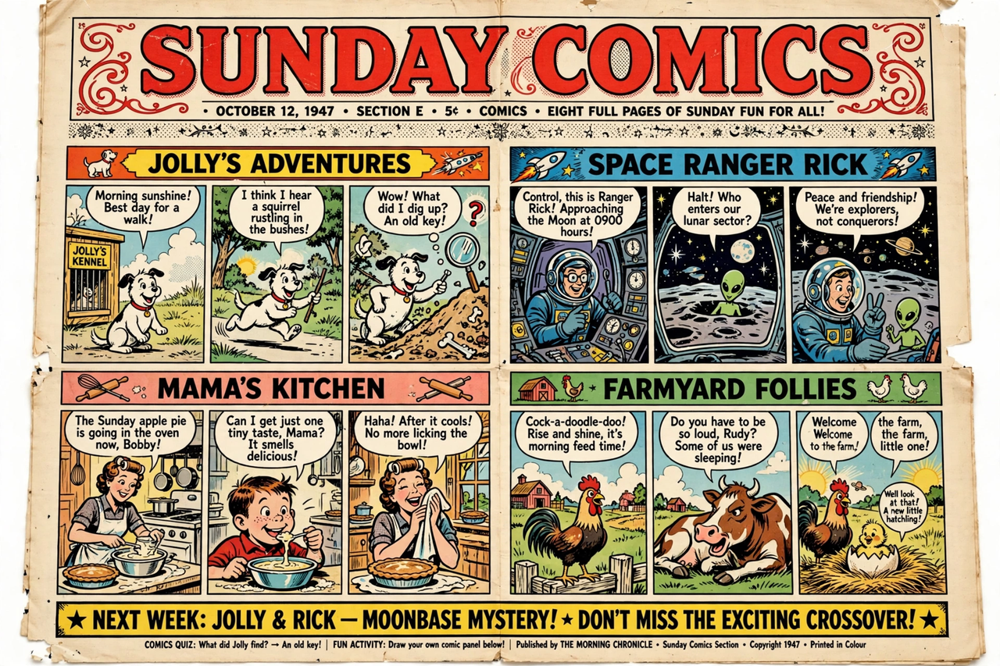

Comic strip
| Comic strip | |
|---|---|
 | |
| Medium | Sequential art in newspapers, magazines and online |
| Formats | Daily strip (usually 3–4 panels); larger Sunday strip |
| Pioneers | Rodolphe Töpffer; Richard F. Outcault (The Yellow Kid) |
A comic strip is a sequence of cartoons, usually arranged in panels, that tells a story or delivers a joke, typically published in newspapers and magazines and, in recent decades, on the web. Comic strips use the conventions of comics — speech balloons, captions and panel transitions — in a compact format: a daily strip of a few black-and-white panels and a larger, often colour, Sunday episode.
History
Precursors include the picture-stories of Rodolphe Töpffer in the 1830s and 19th-century humour magazines. The modern newspaper strip emerged in the 1890s circulation wars of New York publishers Joseph Pulitzer and William Randolph Hearst: Richard F. Outcault's Yellow Kid (1895) and Buster Brown, and Rudolph Dirks's The Katzenjammer Kids (1897), established recurring characters, speech balloons and panel sequences. Winsor McCay's Little Nemo in Slumberland (1905) set artistic standards for the Sunday page.
The 20th century saw an explosion of genres: gag strips (Mutt and Jeff), family strips (Blondie), adventure serials (Tarzan, Buck Rogers, Flash Gordon, Dick Tracy), and artistically ambitious works such as George Herriman's Krazy Kat. The post-war era brought Charles M. Schulz's Peanuts (1950–2000), the most influential strip of its century, and later Doonesbury, Calvin and Hobbes (Bill Watterson), The Far Side (Gary Larson, technically a single-panel cartoon) and Dilbert.
Formats and distribution
Strips are distributed to newspapers by syndicates such as King Features and Andrews McMeel Syndication. A daily strip usually comprises three or four panels; Sunday strips are larger and in colour, sometimes with elaborate layouts. Since the 2000s, declining newspaper readership has shifted creation and distribution to webcomics, which use infinite canvas, archives and direct reader support, though classic syndicated strips continue in print and online.
Related forms
The comic strip is the ancestor of the comic book, which emerged in the 1930s in part by reprinting strips, leading to the Golden Age of Comic Books and publishers such as Marvel Comics. In Europe the tradition merged with the album format of the bande dessinée, as in Tintin.